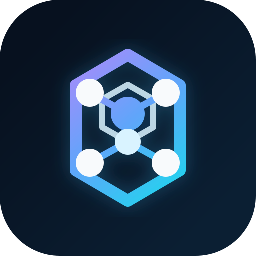
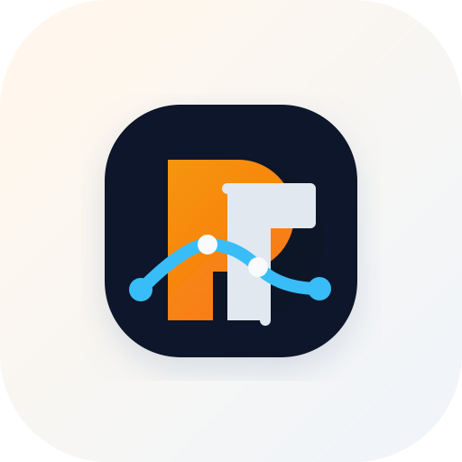
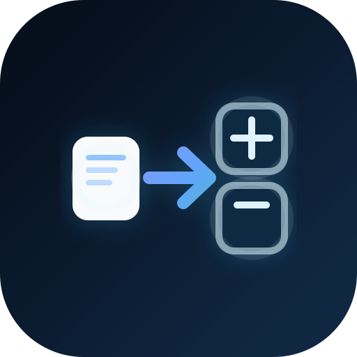
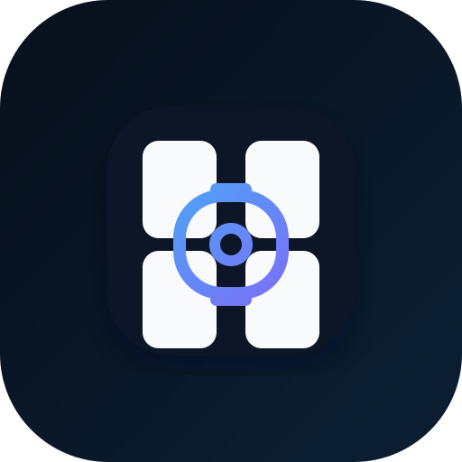

Shield + Tool
A practical security-first mark that reads as both protection and utility.
Three different directions for the app brand: security-focused, network-focused, and a compact monogram. Each is vector-based and easy to refine into an app icon, splash screen mark, or favicon.
A practical security-first mark that reads as both protection and utility.

Option 2A modern network diagram feel with a clean technical silhouette.

Option 3A bold icon-forward direction that is compact and easy to brand across the app.
Reads as layered cards moving through a clean proxy workflow.

Option 2BA card input transforming into organized printable output sheets.

Option 2CA tighter, more icon-like system mark built around a print layout grid.